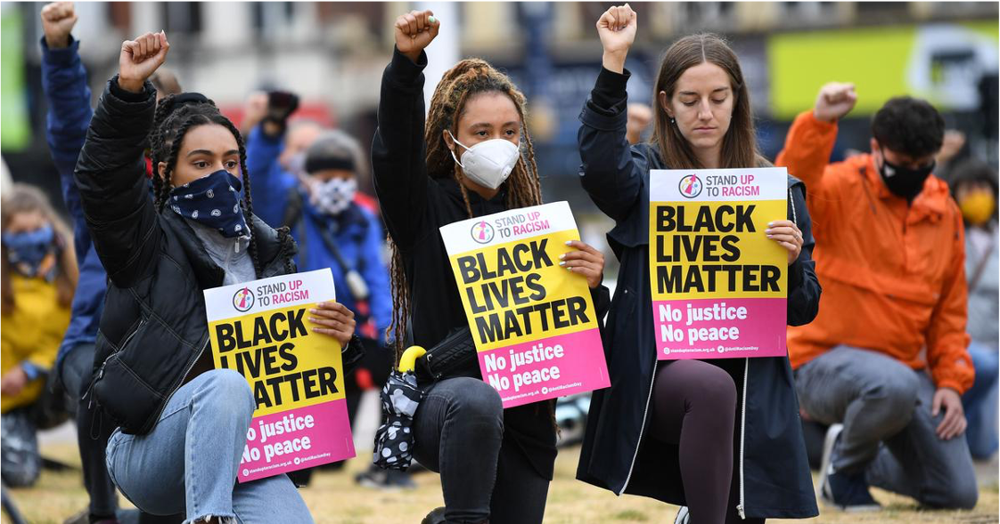
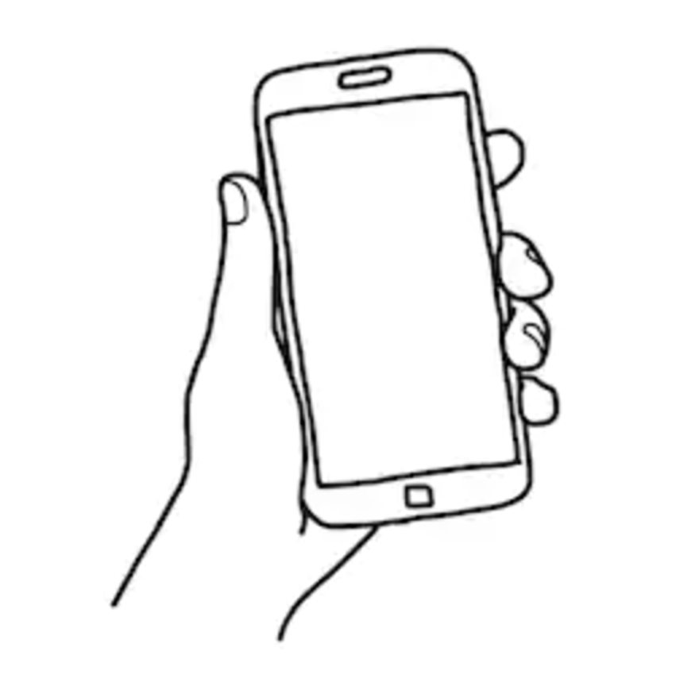

Workshop 2:
Text and Image - Creating Meaning
Intro:
In this workshop you will explore filmmaking and storytelling though image and text, taking inspiration from artists using newspapers, everyday objects and found online content. You will discover how to create new meanings and connections though creative processes and arts activism to consider what it means to be a citizen of the universe.
⥥
⥥
⥥
⥥
The goal of this workshop will be to produce a stop motion film that articulates your message as a "Citizen of the Universe".
Remember to use your zine to complete your workshop tasks, to build a record of your ideas. You may find it useful to look back over your themes from last week.
Also remember that we don't expect you to be video professionals yet, this workshop remains a chance for you to experiment and learn. So don't be worried if you aren't totally satisfied with your results today.
In our next and final intensive workshop at Modern Art Oxford (Workshop 3) we will be putting what you have learnt into action by creating a final collaborative film!
⥥
⥥
⥥
⥥
Lesson 1: Artists Using Collage, Found Footage and the Internet
⥥
⥥
⥥
⥥
Task 1: Subject Matter Collection
Pt. I Cut out new images and text from newspapers and magazines that link to your concepts and concerns from Workshop 1. Feel free to change your theme from last week.
Pt. II Gather objects relating to your theme as you did in the last workshop to use later! You may stick with the same objects or add to your ideas.
Guide time to complete this task: 5-10 mins
⥥
⥥
⥥
⥥
Lesson 2: Artists Using Text
⥥
⥥
⥥
⥥
Task 2: Make a Placard!
Take inspiration from the artists you have been shown today (or others that interest you) and create a placard stating your message as a citizen of the universe.

Your tutor has all the materials you need to make your placard. Get creative!
Guide time to complete this task: 10-15 mins
⥥
⥥
⥥
⥥
The following video will show you how to master this style of filmmaking before going ahead to make your own!
⥥
⥥
⥥
⥥
Lesson 2: How to Make a Stop Motion Film
What is a Stop Motion Film?
Stop motion filming is where objects are moved or manipuluated between still (photographed) frames. This creates the effect of movement when the frames are played back.
Stop Motion Filming Techniques
⥥
⥥
⥥
⥥
Filming Equipment Set-Up
Now you know how to film your own stop motion film, lets look at the set-up that you will use to ensure safe and effective filmmaking!
⥥
⥥
⥥
⥥
Task 3: Make Your Own Stop Animation
Aim: To produce a relatively short x-xx second stop motion film that animates your message as a "Citizen of the Universe." You will then stick in some screenshots from your film into your zine.
Note: Don't worry if your outcome is rough around the edges, this is only an experiment! Have fun with it and see what you come up with :)
Hint: Consider how you could reveal, display or conceal your placard's message with the newspaper clippings and objects you have gathered earlier.
Guide time to complete this task: 20-30 mins
⥥
⥥
⥥
⥥

Thank you for taking part in today's workshop, we hope you enjoyed it!
Here is a checklist of everything that you should have done today. If you have missed something out, click on the link to revisit the relevant section:
Before you go, don't forget to take note of the Arts Award Questions outlined below!
Remember you can access this site from home to revisit any of the lessons or tasks in your own time by using the link and password provided!
You will need the link to complete your Arts Award questions in the next section!
⥥
⥥
⥥
⥥
Arts Award Questions:
For those of you who wish to achieve your Silver Arts Award you will need to spend a little bit of time outside the of workshop filling in the following form :)
Continuing the exploration we have done today into artists and their work, these questions will help you to research and discuss others artists, art forms and cultural organisations.
Are there any artists or art forms you are particularly interested in? Use this time to research and find out a little more about them, or you could even find out about someone or something you’ve never come across before!
We recommend that you create a Word document or equivalent to compose your answers on, and then copy and paste your answers into the form below once completed.
Your tutor will brief the homework at the end of your workshop.
Here is a link to the questions in plain text if you would like to copy and paste them into another document!
Arts Award Questions in Plain Text:
- What sort of art forms are you most interested in? (E.g. film, music, painting, performance...
- Can you give some examples of roles or careers that are involved in these art forms? (Think actor, director, musician, choreographer, writer, painter etc.)
- Where might these people work/exhibit? (For example: artists may exhibit in a gallery, or they may perform in a pop-up exhibition in a shop front.)
Pt. I
- What or who have you chosen to research?
- What sort of research have you done and where have you got your information? (E.g. Interview with "X" or online research using the "X" website)
- What have you found out about your chosen artist, arts organisation or future education or career pathway? (Give at least 5 key points.)
- Has this research influenced your future plans? Yes / No / Maybe
- State your reason/s to your previous answer.
Pt. II
Now it’s time to find out some more about these art forms, artists or organisations. You may want to ask your art teacher or a local artist about how they got into art (via email or in person/zoom) or you may want to research more about how to get into the arts yourself - possibly the Oxford Brookes Art and Design Foundation course, for example.